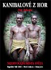
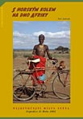
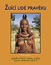
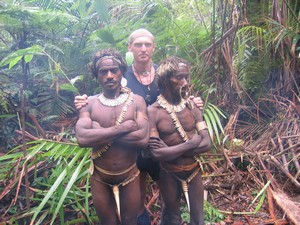
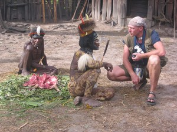
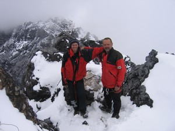
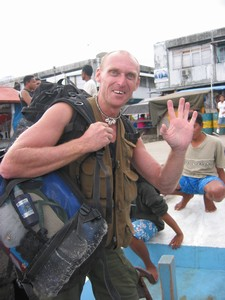

Navigation
 ČESKÁ verze
ČESKÁ verze- The best of New Guinea
- PNG & West Papua
- Today cannibals
- First Contact expedition
- Tribe Expedition
- ITINERARIES AND SCHEDULE
- Carstensz Pyramid - Top of Papua
- Korowai & Kombai tribe – Papua Tree people tribes
- Korowai Batu & Kopkaga - tree people
- Asmat tribe – the Papuan cannibals
- Yali tribe
- Mamberamo river of West Papua
- Dani tribe in Baliem Valley
- Lani tribe in Baliem Valley
- Wamena as a first contact place on West Papua highlands
- Papua New Guinea
- Goroka Show & Mt. Hagen Show
- Asaro Mudman
- Huli tribe – the wig-men
- The films from our expeditions
- More photos
- References
- Papua Postcards
- Papua Internet
- Links
- Contact us
- Download
Come to Papua with us!
Why? Because we are really The Best of all… Almost 100 expediitons in 25 Years
We are more experienced than local guides, because we are unlike them well acquainted with all important Papuan remoted areas. . Our guide, Petr Jahoda, is called “Orang Papua” by the local people. “Orang Papua” translated into English means Papua man…
.JPG)
Josef Bojanovský Photo©Petr Jahoda (Papua guide)
.jpg)
Kombai chef with wife Photo©Josef Bojanovský
.jpg)
Chef of Kombai tribe Photo©Josef Bojanovský
Some of the pictures on our website were taken by our clients. The best ones were taken by Mr. Josef Bojanovský from the Czech Republic (on the photo). It was during a 2005 Expedition to the Tree people – Korowai & Kombai & Asmat. You’ll find also other interesting pictures on this website taken by our clients: Ivo Franz Pindur / Germany, Mrs.Bibiana Fair / Canada, MVDr. Luděk Uzel / Czech Republic, Petr Kožela / Czech Republic, Steven Groot / the Netherlands, and others …
Our clients often take better pictures than the guides, despite the fact that e.g. Petr Jahoda is a professional photographer. Why is it so? We pay maximal effort to care for the needs of our clients. Clients, not taking photos, are the number one priority all the time. We love Papua as well as the local people. This is the reason why we are able to get so close to the aborigines and why they are also friendly to us.
Not only men join our expeditions, but women regularly participate even in the most demanding ones as well. The eldest man who has ever been on our expedition was 61 years old (Expedition Yali – Cannibals from Mountains 2002), the eldest lady was over 60 (Expedition Tree People Korowai & Kombai 2016). Not only photogaphers but also professional film makers from many countries enjoy our services . One of them, Jaromír Gieczek from the Czech Republic shot a seven part series about Papua for Czech state TV. Tourists as well as professionals take part in our expeditions
Do you think you know anyone, who knows Papua better than us?
Read further. If the answer is yes, let us know!
West Papua – Irian Jaya and Papua New Guinea – guided by Petr Jahoda – a climber, photographer, publicist, journalist, and President of the Czech Travellers´ Club.
Papua was his most exciting experience – and he has spent more than four years of his life in Papua.
More than 20 years of expeditions and experience on New Guinea.
Almost a hundred expeditions to remoted areas.
Petr Jahoda, our Papua & Carstensz Pyramid guide, has written and photographed the following books from the „Wildest places in the World“ series.





Petr Jahoda is an author of seven travel/ethnographical publications. One of them deals only with Papua, and the other two deal with Papua, and its surrounding area. In recent years he has been spending a large part of the year in Papua.

Petr Jahoda in Kombai Tree People Tribe Photo©Josef Bojanovský

Petr Jahoda in Dani village Photo:Pavel Vacha

P.Jahoda and M.Caban on the top of Carstensz Pyramid Photo: climber from Chille team
Petr Jahoda was entrusted to organize the climbing expedition to the Carstensz Pyramid by a well known climber Miroslav Caban. Miroslav Caban was the first Czech to finish the Seven Summits project, and second man in history to climb the Mount Everest without oxygen support within the Seven Summits project. The first one was Reinhold Messner. Petr Jahoda climbed the Carstensz Pyramid with Miroslav Caban.
Hello, come with me to famous Papua

Come to „my“ Papua – Petr Jahoda Photo: Steven Groot (Netherlands/Dutch)
Papua is the best place in the world which you can visit. Believe me. I’ve already spent a lot of time there. I don’t know a more interesting place on our planet. Papua is a disappearing world. You can find there things, which you thought ceased to exist long ago. I spent there during last ten years more than four years in total and still it is not enough. Aren’t you curious why? Come with me, I will show you the best of Papua. I am looking forward to being your guide.
Your Petr Jahoda
Papua tribal and mountain guide